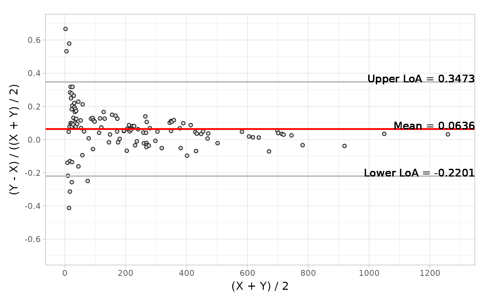
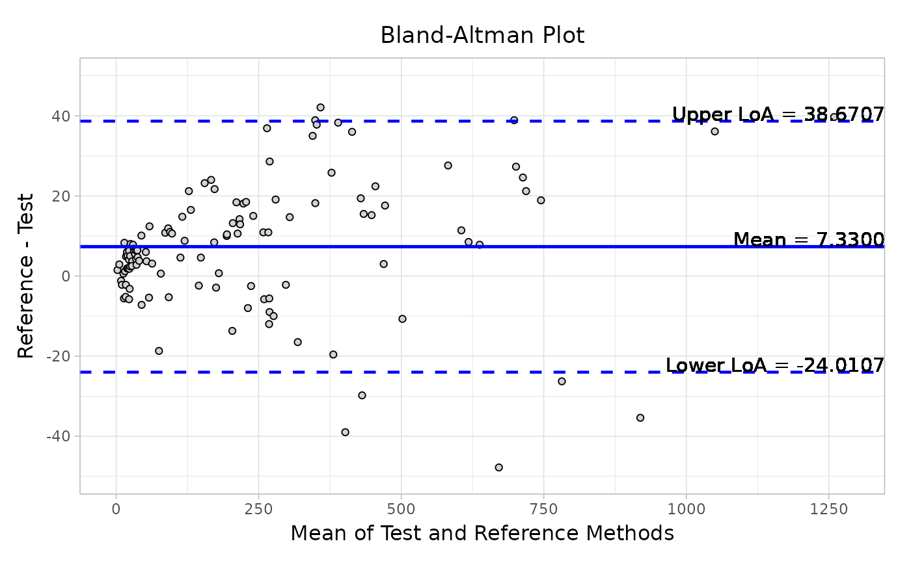
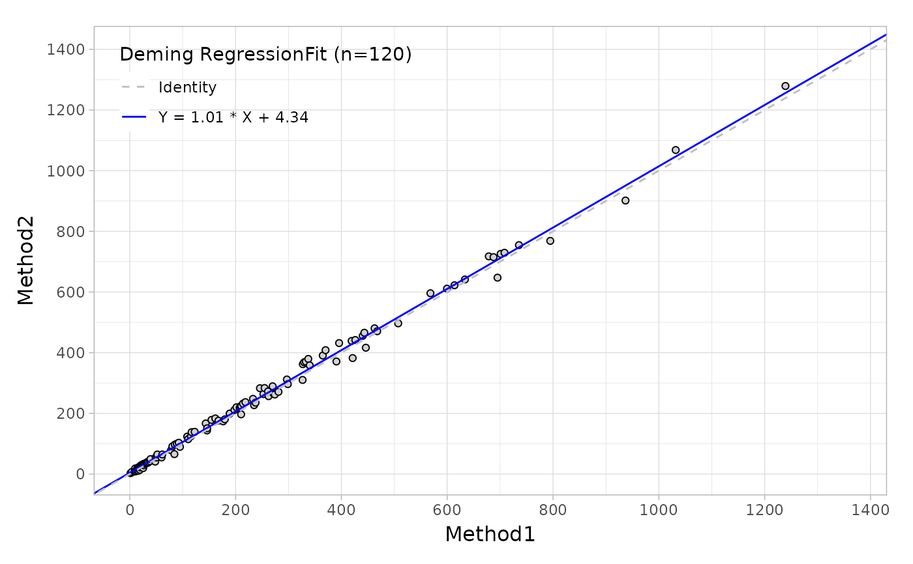

Generate a ggplot for Bland-Altman Plot and Regression Plot
Source: R/pkg_methods.R, R/autoplot.R
autoplot.Rd![[Experimental]](figures/lifecycle-experimental.svg)
Draw a ggplot-based difference Bland-Altman plot of reference assay vs. test assay
for BAsummary object, and a regression plot for MCResult. Also Providing
the necessary and useful option arguments for presentation.
Usage
autoplot(object, ...)
# S4 method for class 'BAsummary'
autoplot(
object,
type = c("absolute", "relative"),
color = "black",
fill = "lightgray",
size = 1.5,
shape = 21,
jitter = FALSE,
ref.line = TRUE,
ref.line.params = list(col = "blue", linetype = "solid", size = 1),
ci.line = FALSE,
ci.line.params = list(col = "blue", linetype = "dashed"),
loa.line = TRUE,
loa.line.params = list(col = "blue", linetype = "dashed"),
label = TRUE,
label.digits = 4,
label.params = list(col = "black", size = 4),
x.nbreak = NULL,
y.nbreak = NULL,
x.title = NULL,
y.title = NULL,
main.title = NULL
)
# S4 method for class 'MCResult'
autoplot(
object,
color = "black",
fill = "lightgray",
size = 1.5,
shape = 21,
jitter = FALSE,
identity = TRUE,
identity.params = list(col = "gray", linetype = "dashed"),
reg = TRUE,
reg.params = list(col = "blue", linetype = "solid"),
equal.axis = FALSE,
legend.title = TRUE,
legend.digits = 2,
x.nbreak = NULL,
y.nbreak = NULL,
x.title = NULL,
y.title = NULL,
main.title = NULL
)Arguments
- object
(
BAsummary,MCResult)
input, depending on which function you have done,blandAltman()ormcreg().- ...
not used.
- type
(
string)
difference type from input, default is 'absolute'.- color, fill
(
string)
point colors.- size
(
numeric)
the size of points.- shape
(
integer)
theggplotshape of points.- jitter
(
logical)
whether to add a small amount of random variation to the location of points.- ref.line
(
logical)
whether to plot a 'mean' line, default is TRUE.- ref.line.params, ci.line.params, loa.line.params
(
list)
parameters (color, linetype, linewidth) for the argument 'ref.line', 'ci.line' and 'loa.line'; eg. ref.line.params = list(col = "blue", linetype = "solid", linewidth = 1).- ci.line
(
logical)
whether to plot a confidence interval line of 'mean', default is FALSE.- loa.line
(
logical)
whether to plot limit of agreement line, default is TRUE.- label
(
logical)
whether to add specific value label for each line (ref.line, ci.line and loa.line). Only be shown when the line is defined as TRUE.- label.digits
(
integer)
the number of digits after the decimal point in the each label.- label.params
(
list)
parameters (color, size, fontface) for the argument 'label'.- x.nbreak, y.nbreak
(
integer)
an integer guiding the number of major breaks of x-axis and y-axis.- x.title, y.title, main.title
(
string)
the x-axis, y-axis and main title of plot.- identity
(
logical)
whether to add identity line, default is TRUE.- identity.params, reg.params
(
list)
parameters (color, linetype) for the argument 'identity' and 'reg'; eg. identity.params = list(col = "gray", linetype = "dashed").- reg
(
logical)
whether to add regression line where the slope and intercept are obtained frommcr::mcreg()function, default is TRUE.- equal.axis
(
logical)
whether to adjust the ranges of x-axis and y-axis are identical. Ifequal.axis = TRUE, x-axis will be equal to y-axis.- legend.title
(
logical)
whether to present the title in the legend.- legend.digits
(
integer)
the number of digits after the decimal point in the legend.
Value
A ggplot based Bland-Altman plot or regression plot that can be
easily customized using additional ggplot functions.
Note
If you'd like to alter any part that this autoplot function haven't
provided, adding other ggplot statements are suggested.
See also
h_difference() to see the type details.
mcr::mcreg() to see the regression parameters.
Examples
# Specify the type for difference plot
data("platelet")
object <- blandAltman(x = platelet$Comparative, y = platelet$Candidate)
autoplot(object)
autoplot(object, type = "relative")
# Set the addition parameters for `geom_point`
autoplot(object,
type = "relative",
jitter = TRUE,
fill = "lightblue",
color = "grey",
size = 2
)
# Set the color and line type for reference and limits of agreement lines
autoplot(object,
type = "relative",
ref.line.params = list(col = "red", linetype = "solid"),
loa.line.params = list(col = "grey", linetype = "solid")
)

# Set label color, size and digits
autoplot(object,
type = "absolute",
ref.line.params = list(col = "grey"),
loa.line.params = list(col = "grey"),
label.digits = 2,
label.params = list(col = "grey", size = 3, fontface = "italic")
)
# Add main title, X and Y axis titles, and adjust X ticks.
autoplot(object,
type = "absolute",
x.nbreak = 6,
main.title = "Bland-Altman Plot",
x.title = "Mean of Test and Reference Methods",
y.title = "Reference - Test"
)

# Using the default arguments for regression plot
data("platelet")
fit <- mcreg(
x = platelet$Comparative, y = platelet$Candidate,
method.reg = "Deming", method.ci = "jackknife"
)
#> Jackknife based calculation of standard error and confidence intervals according to Linnet's method.
autoplot(fit)

# Only present the regression line and alter the color and shape.
autoplot(fit,
identity = FALSE,
reg.params = list(col = "grey", linetype = "dashed"),
legend.title = FALSE,
legend.digits = 4
)